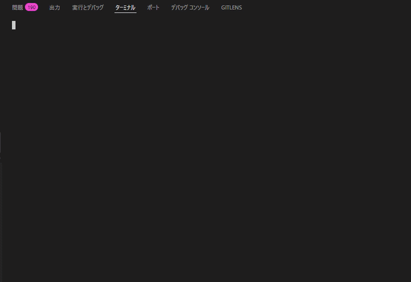
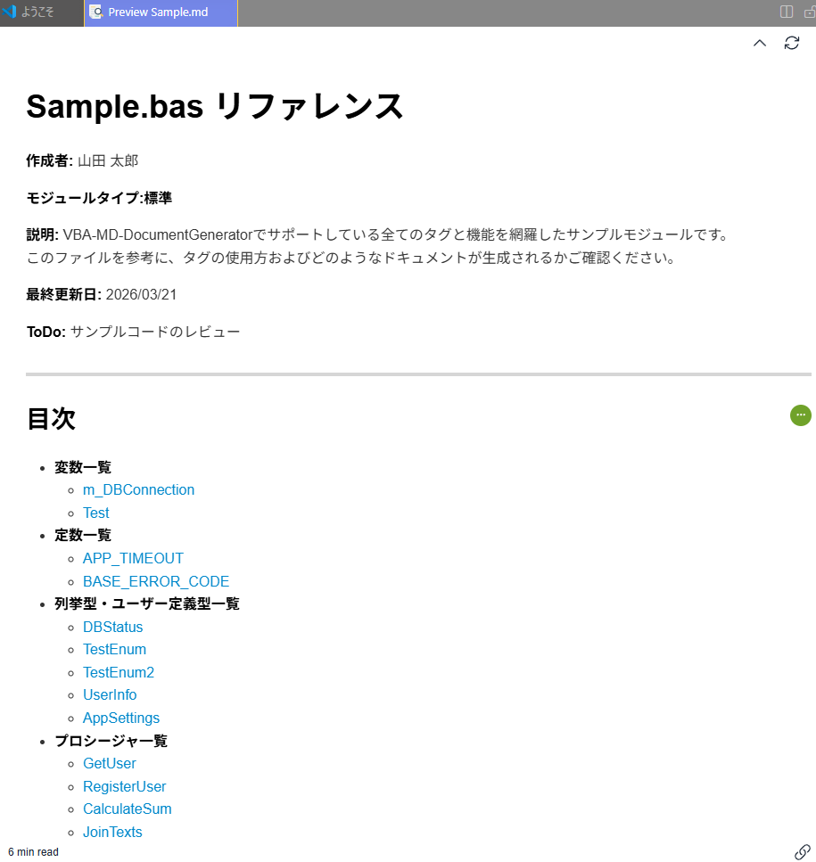
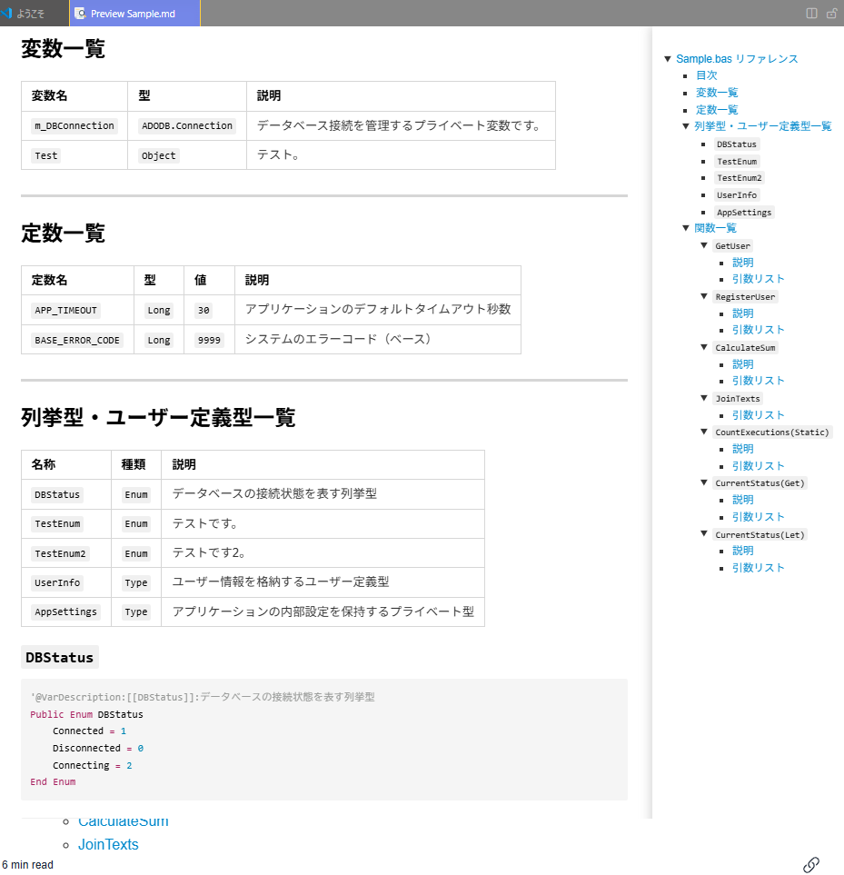
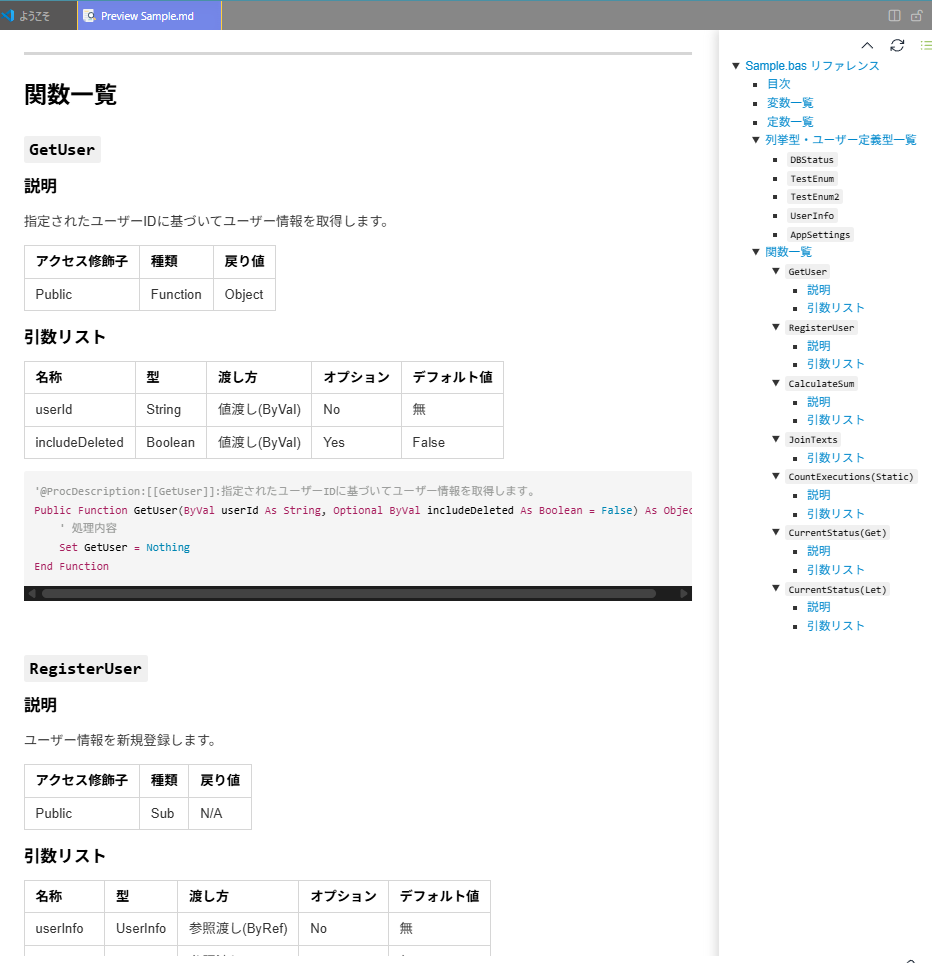

本ツールはVBA (Visual Basic for Applications) のソースコードから、マークダウン形式のAPIリファレンスドキュメントを自動生成するCLIツールです。 外部からお借りしたXDocGenというプログラムを改修し、自作のプログラムと組み合わせて作成しました。
解析されたソースコードをJSONに変換し、更にJSONからマークダウン形式のファイルに変換しドキュメントを出力します。
本ツールは別途、個人で作成しているVBAプロジェクトのドキュメント化を一任するために作成したものです。 そのため、あらゆる状況を想定した動作保証はしていません。あらかじめご承知おきください。
|
ターミナルでの実行デモ (GIF)
 |
生成されたMarkdownドキュメント
 |
|
各要素の一覧を表で出力
 |
該当部分のソースコードの抽出
 |
プロジェクトの主要なディレクトリ構成は以下の通りです。
VBA-MD-DocumentGenerator/
├── assets/ # README用画像・デモGIFなど
├── src/ # TypeScriptソースコード
│ ├── main.ts # エントリーポイント
│ ├── vbaToJson.ts # VBAからJSONへの変換処理
│ ├── jsonMDGenerator.ts # JSONからMarkdownへの変換処理
│ ├── config.schema.ts # Zodによる設定スキーマ定義
│ ├── constants.ts # 定数定義
│ └── ... # その他パス解決やファイル操作ユーティリティなど
├── xdocgen/ # VBA解析コアエンジン (JavaScript)
│ ├── docgen.js # コアスクリプト
│ └── docgen.d.ts # TypeScript向け型定義ファイル
├── tests/ # Jestテストコード
├── srcFiles/ # (デフォルト入力) 解析対象VBAファイルの配置先
├── docs/ # (TypeDoc出力) APIリファレンスドキュメント
├── out/ # (デフォルト出力) 生成物格納先
│ ├── json/ # 中間生成されたJSONファイル
│ └── md/ # 最終生成されたMarkdownドキュメント
├── dist/ # (ビルド出力) コンパイル済みJavaScriptファイル
│ ├── src/ # TypeScriptソースコードのコンパイル結果
│ ├── xdocgen/ # VBA解析コアエンジンのファイル
│ └── backup/ # (Git非追跡) バックアップ用フォルダ
├── vba-md-doc-config.sample.json # メイン設定ファイルのサンプル
└── vba-md-doc-env.sample.json # 環境設定ファイルのサンプル
実行環境
パッケージマネージャー
npmでの動作確認はしていません。
リポジトリをクローンした後、以下の手順で環境を構築してください。
# 1. パッケージのインストール
pnpm install
# (npmをご利用の場合: npm install)
# 2. 設定ファイルの準備
# サンプルファイルをコピーして、ご自身の環境に合わせて設定ファイルを作成します
cp vba-md-doc-env.sample.json vba-md-doc-env.json
cp vba-md-doc-config.sample.json vba-md-doc-config.json
# 3. TypeScriptのコンパイル（ビルド）
pnpm run build
# (npmをご利用の場合: npm run build)
本ツールは2つの設定ファイルを使用します。サンプルファイル(.sample.json)をコピーして、ご自身の環境に合わせて編集してください。
vba-md-doc-env.jsonツールの起動時に最初に読み込まれる環境設定ファイルです。
基本的には変更不要です。
| 項目 | 説明 | デフォルト値 |
|---|---|---|
targetConfig.resolveBootConfigPath |
ツール本体の設定ファイルへのパスを指定します。 | "vba-md-doc-config.json" |
targetConfig.bootConfigKey |
パスを解決するためのキー名です（変更不要）。 | "resolveBootConfigPath" |
vba-md-doc-config.jsonツールの主要な動作設定を行うファイルです。入出力フォルダや対象の拡張子などを変更したい場合はここを編集します。
ioPaths (入出力パスの設定)| 項目 | 説明 | デフォルト値 |
|---|---|---|
sourcePaths.srcFiles |
解析対象のVBAファイルを配置する入力フォルダのパスです。 | "srcFiles" |
outputPaths.temp |
処理中に使用する一時フォルダのパスです。 | "temp" |
outputPaths.out |
出力先のルートフォルダのパスです。 | "out" |
outputPaths.json |
中間生成されるJSONファイルの出力先フォルダのパスです。 | "out/json" |
outputPaths.markdown |
最終的なMarkdownドキュメントの出力先フォルダのパスです。 | "out/md" |
params (実行パラメーターの設定)| 項目 | 説明 | デフォルト値 |
|---|---|---|
extension |
解析対象とするファイルの拡張子を指定します。(.cls, .bas など) |
".cls" |
markdownFlg |
Markdownファイルを出力するかどうかのフラグです。("true" または "false") |
"true" |
implementationsPaths (プログラム内部のパス設定)このセクションはプログラム内部で利用するスクリプトのパス定義です。
基本的に変更しないでください。
ビルド出力先ディレクトリ（dist）などを変更した場合のみ調整が必要です。
設定ファイル (vba-md-doc-config.json) の ioPaths.sourcePaths.srcFiles に指定したフォルダ（デフォルトは srcFiles）にVBAファイル(.cls, .bas など) を配置し、以下のコマンドを実行します。
pnpm start
実行が完了すると、設定した出力先ディレクトリ（デフォルトは out/md）にMarkdownファイルが生成されます。
本ツールのモジュール依存関係と、ファイル（データ）の流れをまとめた図です。
プロジェクトの全体像を正確に把握していただくため、構成情報を基にAIを用いて生成したマーメイド図（構成図）を掲載しています。
graph TD
%% スタイル定義
classDef inputData fill:#f9d0c4,stroke:#333,stroke-width:3px;
classDef outputData fill:#d4f1f4,stroke:#333,stroke-width:2px;
classDef process fill:#fcfcfa,stroke:#999,stroke-width:1px;
classDef coreProcess fill:#fffcdc,stroke:#eebb00,stroke-width:2px;
%% 外部ファイル・データ
subgraph Input ["入力 (Input)"]
VBA_Files[/"VBAソースコード\n(.cls, .bas)"/]:::inputData
Config_File[/"設定ファイル\n(JSON)"/]:::inputData
end
%% プログラム本体
subgraph System ["VBA-MD-DocumentGenerator"]
Main{"main.ts\n(処理フロー統括)"}:::coreProcess
subgraph Config_Module ["1. 設定管理ブロック"]
ConfigLoader("configLoader.ts\n(Zodスキーマ検証)"):::process
PathResolver("pathResolver.ts\n(パス解決)"):::process
end
subgraph VBA_Parse_Module ["2. VBA解析ブロック"]
VbaToJson("vbaToJson.ts\n(文字コード変換・制御)"):::process
XDocGen("xdocgen/docgen.js\n(VBA構文解析エンジン)"):::process
end
subgraph MD_Gen_Module ["3. Markdown生成ブロック"]
JsonMDGen("jsonMDGenerator.ts\n(フォーマット変換)"):::process
end
FileUtils("fileUtils.ts\n(ファイル・フォルダ操作)"):::process
end
%% 外部出力
subgraph Output ["出力 (Output)"]
JSON_Files[/"中間JSONファイル"/]:::outputData
MD_Files[/"Markdownドキュメント"/]:::outputData
end
%% データの流れと依存関係（矢印）
Config_File -.->|読み込み| ConfigLoader
ConfigLoader -->|設定情報| PathResolver
PathResolver ==>|絶対パスの生成・設定| Main
Main ==>|VBAソースコード解析指示| VbaToJson
Main -.->|ユーティリティ利用| FileUtils
VBA_Files -.->|読み込み| VbaToJson
VbaToJson -->|VBAコード| XDocGen
XDocGen -->|構造化JSONデータ| VbaToJson
VbaToJson ==>|出力| JSON_Files
Main ==>|生成指示| JsonMDGen
JSON_Files -.->|読み込み| JsonMDGen
JsonMDGen ==>|出力| MD_Files
タグは、対象となる要素（変数、定数、プロシージャなど）の直上にタグを記述することを前提としています。
'@タグ名: 値 や '@タグ名:[[要素名]]: 値 などの形式で記述することで、Markdownドキュメントに詳細情報が反映されます。
プロシージャ、メソッド･定数･Enum･Typeなど一部の要素はタグ無しでドキュメント化されます。(以下の一覧に含まれないものは基本的に自動出力です。) 任意の説明はDescription系のタグで追加してください。
下記に使用可能なタグの一覧を記載します。
なお、実際のソースコードで実際にタグを用いた詳細なサンプルは \srcFiles\Sample.bas です。
そちらも併せてご参考ください。
ソースコードの先頭付近に(Option Explicitの直後など)記述し、モジュール･クラスそのものに関する情報を定義します。
| タグ名 | 説明 | 記述例 |
|---|---|---|
@Description |
モジュール･クラスの説明を記述します。 | '@Description:DB接続を管理するモジュールです。 |
@Author |
作成者名やバージョンなどを記述します。 | '@Author:山田 太郎 |
@ToDo |
今後の課題や修正予定を記述します。 | '@ToDo:エラーハンドリングの強化 |
@LastUpdate |
最終更新日 | '@LastUpdate:1900/01/01 |
@ModuleName |
ファイル名とは異なるモジュール名を明示したい場合に使用します。(通常はファイル名から自動出力されます。) | '@ModuleName: DatabaseManager |
Option Explicit
'@Description: VBA-MD-DocumentGeneratorでサポートしている全てのタグと機能を網羅したサンプルモジュールです。
'このファイルを参考に、タグの使用方およびどのようなドキュメントが生成されるかご確認ください。
'@Author:山田 太郎
'@ToDo:サンプルコードのレビュー
'@LastUpdate:2026/03/21
'@ModuleName:SampleModule
対象となる変数、定数(Const)、列挙型(Enum)、ユーザー定義型(Type)の直上に記述し、その詳細を定義します。
タグの前後にスペースを入れるとうまく解析できないため、左詰めかつ内容は@Tag:の直後から記述してください。
重要な変数のみをドキュメント化する設計としているため、@Var～系のタグを変数の直上に3つ記述することを必須としています。
定数(Const)、列挙型(Enum)、ユーザー定義型(Type)は基本的に自動解析されますが、任意の説明のみタグを用いて記述します。
| タグ名 | 説明 | 記述例 |
|---|---|---|
@VarName |
変数の名前。（※通常の変数でのみ必須） | '@VarName: m_DBConnection |
@VarType |
変数の型。（※通常の変数でのみ必須） | '@VarType: ADODB.Connection |
@VarDescription |
変数の説明を記述します。（※通常の変数でのみ必須） | '@VarDescription: データベース接続オブジェクト |
@VarDescription[[名前]]: |
定数･列挙型･ユーザー定義型の説明を記述します。[[名前]]は各要素を識別するために必須です。 |
'@VarDescription:[[Sample]]:定数の説明です。 |
' 【 変数 】
' 以下のように変数宣言の上から3つのタグを記述してください。
'@VarName:m_DBConnection
'@VarType:ADODB.Connection
'@VarDescription:データベース接続を管理するプライベート変数です。
Private m_DBConnection As Object
' 【 Enum 】
'@VarDescription:[[DBStatus]]:データベース接続状態を表す列挙型です。
Public Enum DBStatus
Connected = 1
Disconnected = 0
End Enum
' 【 定数 】
'@VarDescription:[[APP_TIMEOUT]]:アプリケーションのデフォルトタイムアウト秒数です。
Public Const APP_TIMEOUT As Long = 30
' 【 Type 】
'@VarDescription:[[UserInfo]]:ユーザー情報を格納するユーザー定義型です。
Public Type UserInfo
ID As String
Name As String
Age As Integer
End Type
各プロシージャ（Sub / Function / Property）の直上に記述し、その詳細を定義します。
＠ProcDescription:[[プロシージャ名]]:タグを使って記述する必要があります。Const)、列挙型(Enum)、ユーザー定義型(Type)のものと同じです。| タグ名 | 説明 | 記述例 |
|---|---|---|
@ProcDescription:[[プロシージャ名]]: |
プロシージャの補足説明を任意に追加できます。 | '@ProcDescription:[[init]]:初期化処理 |
記述例:
'【 Function 】
'@ProcDescription:[[GetUser]]:指定されたユーザーIDに基づいてユーザー情報を取得します。
Public Function GetUser(ByVal userId As String, Optional ByVal includeDeleted As Boolean = False) As Object
' 処理内容
Set GetUser = Nothing
End Function
'【 Sub 】
'@ProcDescription:[[RegisterUser]]:ユーザー情報を新規登録します。
Public Sub RegisterUser(ByRef userInfo As UserInfo, ByRef resultMsg As String)
' 処理内容
resultMsg = "Success"
End Sub
' 【 プロパティ 】
'@ProcDescription:[[CurrentStatus]]:現在のステータスを取得します。
Public Property Get CurrentStatus() As DBStatus
CurrentStatus = DBStatus.Connected
End Property
単体テストの実行 (Jest)
pnpm test
APIドキュメントの生成 (TypeDoc)
pnpm run docs
生成されたHTMLドキュメントは docs/ フォルダに出力されます。
package.json で依存パッケージのバージョンを厳密に固定しています。.gitignore に登録し、リポジトリには .sample.json のみを含めることで、環境依存コードの混入を防いでいます。
本プロジェクトでは、TypeScriptのソース(src/)と、依存するJSモジュール(xdocgen/)が並列に配置されています。
ビルド後もファイル間の相対パス関係を正しく維持するため、TypeScriptのコンパイル設定 (tsconfig.json の rootDir) はプロジェクトルート (.) に設定されています。
ビルドされた実行ファイルは dist/main.js ではなく dist/src/main.js に出力される仕様となっています。
デバッグ設定などを変更する際はご注意ください。
本ツールは MIT ライセンス のもとで公開されています。詳細は LICENSE.md をご確認ください。
本プログラムでは、VBA（Excelなどの自動化プログラム）を読み取る仕組みとして、Anthony Mancini氏が作った XDocGen をもとに、独自の機能追加を行って使用しています。素晴らしいアイデアとコードに深く感謝いたします。